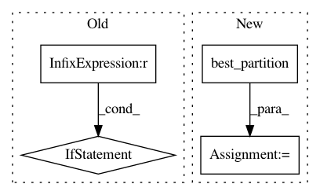

c279889eee76739f07b93c2155b1e0b4c65f13ea,pynets/plotting/plot_graphs.py,,plot_conn_mat_func,#Any#Any#Any#Any#Any#Any#Any#Any#Any#Any#Any#Any#Any#,105
Before Change
// Plot community adj. matrix
gamma = nx.density(nx.from_numpy_array(conn_matrix))
try:
if network or len(conn_matrix) < 100:
[node_comm_aff_mat, q] = modularity_louvain_und_sign(conn_matrix, gamma=float(gamma*0.001))
else:
[node_comm_aff_mat, q] = modularity_louvain_und_sign(conn_matrix, gamma=float(gamma*0.01))
print("%s%s%s%s%s" % ("Found ", str(len(np.unique(node_comm_aff_mat))), " communities using γ=", str(gamma), "..."))
plot_graphs.plot_community_conn_mat(conn_matrix, label_names, out_path_fig_comm, node_comm_aff_mat)
except:
print("\nWARNING: Louvain community detection failed. Cannot plot community matrix...")
After Change
// Plot community adj. matrix
G = nx.from_numpy_matrix(conn_matrix)
try:
node_comm_aff_mat = community.best_partition(G)
print("%s%s%s" % ("Found ", str(len(np.unique(node_comm_aff_mat))), " communities..."))
plot_graphs.plot_community_conn_mat(conn_matrix, label_names, out_path_fig_comm, node_comm_aff_mat)
except:
print("\nWARNING: Louvain community detection failed. Cannot plot community matrix...")
In pattern: SUPERPATTERN
Frequency: 3
Non-data size: 4
Instances
Project Name: dPys/PyNets
Commit Name: c279889eee76739f07b93c2155b1e0b4c65f13ea
Time: 2019-06-25
Author: dpisner@utexas.edu
File Name: pynets/plotting/plot_graphs.py
Class Name:
Method Name: plot_conn_mat_func
Project Name: dPys/PyNets
Commit Name: c279889eee76739f07b93c2155b1e0b4c65f13ea
Time: 2019-06-25
Author: dpisner@utexas.edu
File Name: pynets/plotting/plot_gen.py
Class Name:
Method Name: plot_connectogram
Project Name: rusty1s/pytorch_geometric
Commit Name: b2002a8ef80ecbecee09fd61b910c987648455c7
Time: 2020-08-26
Author: matthias.fey@tu-dortmund.de
File Name: torch_geometric/datasets/karate.py
Class Name: KarateClub
Method Name: __init__